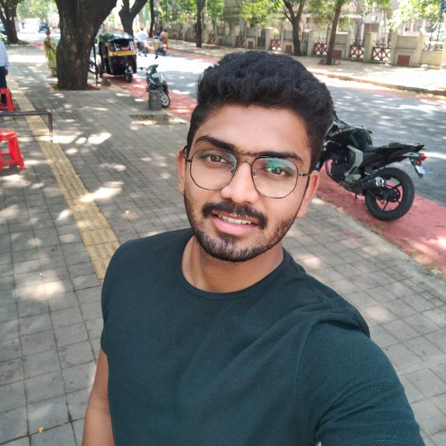

ABOUT ME
ACADAMIC
PROJECT
SKILLS
GET IN TOUCH

Rushikesh More
I aim to attain a challenging position in the reputed organization, so that I can expand my learning’s, knowledge and skills to maintain a good career being a valuable asset for the organization
Acadamic
Academics not only helps us get new and better jobs but also brings out the positive potentials within us.
BACHELOR OF Mechanical Engineering (BE)
Savitribai Phule Pune University,
Jul 2021
(Gold Medalist 7.56/10.0)
DIPLOMA IN ENGINEERING (Diploma)
Maharashtra State Board of Technical Education, Mumbai
Jun 2017
(First Class 73.22/100)
High-school
-Maharashtra State Board Of Secondary And Higher Secondary
Education
March 2014
(First Class 73.22/100)
Projects
I am of the opinion that hands on coding or projects are the basic literacy in the digital world. It is really important for a programmer to understand and be able to work with the technology around him or her. I have been coding since my engineering and below are a few examples to demonstrate my knowlegde, creativity, math and confidence.
Library Management System (Working)i found out an issue with my libaray Management system . so i Developed an monitoing sysytem for the Library i used mysql databse for this project |
Self Inrouction websiteDeveloped Self inroduction website using front end technology like html,css,javascript for this project |
Amazon (Clone website)Created amazon clone site using Django Framework and MySQL |
“Ergo Comfy 3” Tube Welding”Problem Definition: While performing welding at Aviation , Operator facing Ergonomics issue with having Ergo risk we resolved it with the help of Kaizen |
Skills
Skills are a important aspect of a person's career as they define your ability in your domain. In my opinion, with skills and knowledge, socializing is also and important aspect. Throughout my academic career, I have joined a lot of clubs and organizations for improving my self confidence, public speaking and networking. Technical as well as Non- technical knowledge are important when it comes to thriving in the society. Here are a few of my skills and the organizations that I have joined uptil now.